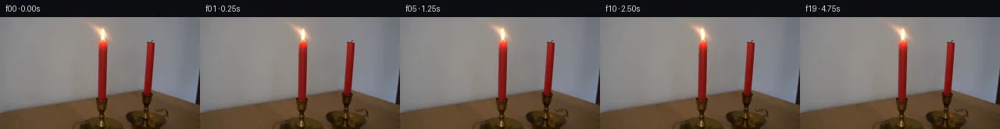

![首帧]()

Round 00
2026-11-05T01:44:59.226940+00:00像素候选变化代码 +194/−0inspection 更新
pixels 35d95275bbac5360 · code 983b126da231e94d
查看本轮 generate.py 真实 diff
--- previous/generate.py +++ current/generate.py @@ -0,0 +1,194 @@ +from pathlib import Path + +import cv2 +import numpy as np +from PIL import Image, ImageDraw, ImageFilter + +from artifact_io import save + + +ROOT = Path(__file__).resolve().parent +W, H = 256, 144 + + +# Hand-authored, low-amplitude flame states. Each tuple is +# (horizontal tip displacement in pixels, height scale, width scale, light pulse). +# State zero is not used for frame 00 because that frame is kept exactly intact. +STATES = [ + (0.00, 1.00, 1.00, 0.00), + (0.55, 0.96, 0.91, -0.10), + (-0.75, 1.07, 0.94, 0.08), + (-0.18, 0.91, 1.06, -0.13), + (0.12, 1.01, 0.97, 0.01), + (-0.60, 1.04, 0.94, 0.04), + (-0.14, 1.09, 1.04, 0.13), + (0.66, 0.94, 0.91, -0.10), + (0.31, 0.98, 1.08, 0.05), + (0.03, 1.01, 1.00, 0.01), + (-0.72, 1.05, 0.90, 0.07), + (-0.25, 0.92, 1.02, -0.12), + (0.72, 1.06, 0.93, 0.08), + (0.18, 1.04, 1.07, 0.14), + (-0.68, 1.01, 0.91, -0.02), + (-0.26, 0.93, 1.06, -0.09), + (0.11, 1.08, 0.98, 0.10), + (0.62, 0.98, 0.93, -0.03), + (0.14, 1.02, 1.02, 0.04), + (-0.08, 1.00, 0.99, 0.00), +] + + +def gaussian(cx, cy, sx, sy): + yy, xx = np.mgrid[0:H, 0:W].astype(np.float32) + return np.exp(-0.5 * (((xx - cx) / sx) ** 2 + ((yy - cy) / sy) ** 2)) + + +def animate_flame(source, sway, height_scale, width_scale, pulse, frame_index): + """Warp the photographed flame in place, keeping its base pinned to the wick.""" + yy, xx = np.mgrid[0:H, 0:W].astype(np.float32) + anchor_x, anchor_y = 131.0, 30.0 + + # Inverse transform for a tapered bend. The displacement is zero at the + # wick and increases smoothly toward the top of the flame. + src_y = anchor_y - (anchor_y - yy) / height_scale + rise = np.clip((anchor_y - src_y) / 18.0, 0.0, 1.45) + curved_sway = sway * np.power(rise, 1.45) + # A very small deterministic oscillation bends the tip without translating + # the whole flame. + curved_sway += 0.13 * np.sin(frame_index * 1.31 + rise * 2.6) * rise**2 + src_x = anchor_x + (xx - anchor_x - curved_sway) / width_scale + + warped = cv2.remap( + source, + src_x.astype(np.float32), + src_y.astype(np.float32), + interpolation=cv2.INTER_CUBIC, + borderMode=cv2.BORDER_REFLECT_101, + ).astype(np.float32) + + # An elliptical feather selects the flame and its naturally photographed + # bloom. A much stronger inner weight removes any double-image at the core. + core = gaussian(131.0, 22.5, 5.0, 13.0) + bloom = gaussian(126.0, 27.0, 20.0, 18.0) + feather = np.clip(core * 1.42 + bloom * 0.24, 0.0, 1.0)[..., None] + out = source.astype(np.float32) * (1.0 - feather) + warped * feather + + # The source already contains the flame's broad halo. Pulse it by only a + # few code values so wall texture and the ambient exposure remain stable. + light = gaussian(128.0, 28.0, 23.0, 20.0)[..., None] + tint = np.array([9.0, 4.1, 0.7], dtype=np.float32)[None, None, :] + out += light * tint * pulse + + # Warm reflection at the red wax lip and wick, phase-locked to brightness. + lip = gaussian(131.0, 30.5, 4.4, 2.4)[..., None] + out += lip * np.array([4.0, 1.4, 0.15], dtype=np.float32) * pulse + + return np.clip(np.rint(out), 0, 255).astype(np.uint8) + … diff truncated; 107 more lines …